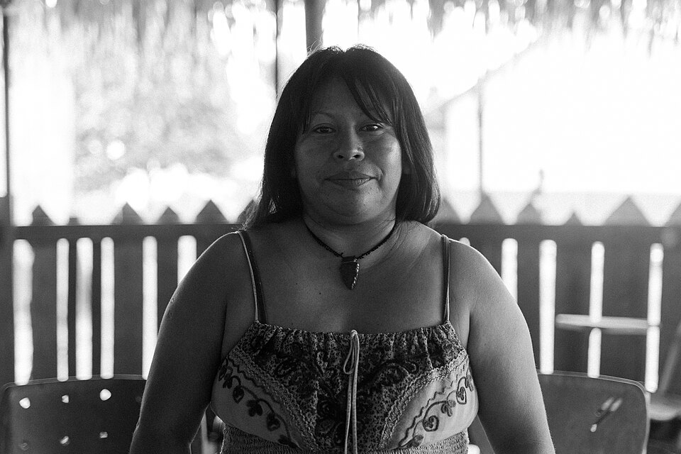
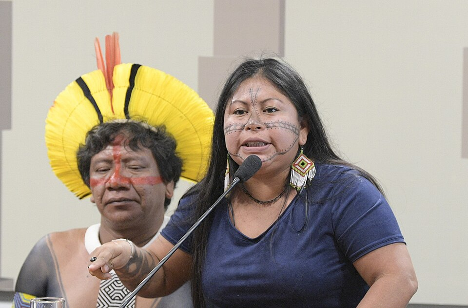
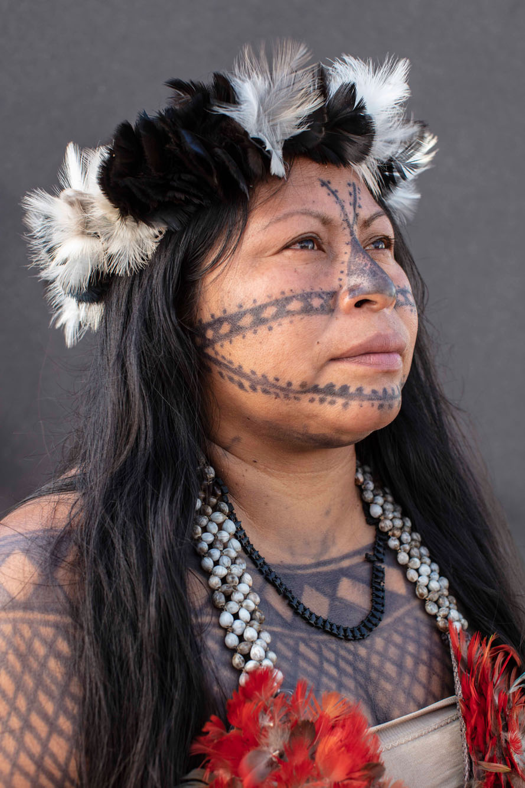
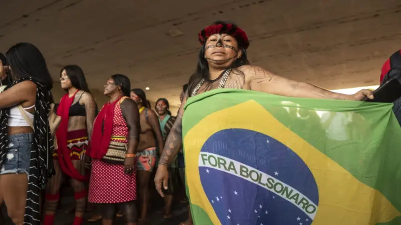
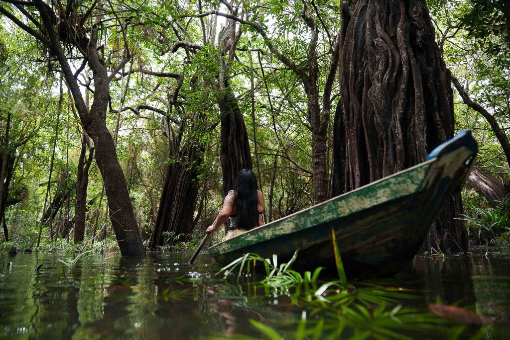

1981
Nasce Alessandra Korap no território Munduruku. Cresce em contexto de pressões externas sobre seu povo, aprendendo desde cedo a importância da coletividade e da defesa territorial para a sobrevivência.


“Nossa luta é pelo território.”
Alessandra Korap
Foto: Gabriel Dell / DPU. Licença: Creative Commons Zero, Public Domain Dedication.
Trajetória inicial: origens, formação e engajamento na defesa territorial

Foto: Pedro França / Agência Senado. Licença: Creative Commons Attribution 2.0.
Alessandra Korap nasceu no coração da Amazônia, no território Munduruku, localizado no estado do Pará. Seu povo, os Munduruku, são conhecidos por sua organização social complexa, sua relação profunda com a floresta e sua história de resistência contra invasões territoriais. Desde sua infância, Alessandra vivenciou as pressões externas que ameaçavam seu povo — garimpeiros ilegais, exploradores madeireiros, e projetos de desenvolvimento predatório que buscavam converter a floresta em lucro. Crescendo neste contexto de ameaças constantes, desenvolveu consciência política precoce e um compromisso inabalável com a defesa de seu povo e de seu território.
Alessandra Korap se tornou liderança destacada do povo Munduruku, participando ativamente de mobilizações contra projetos de hidrelétricas que ameaçavam inundar territórios ancestrais, contra mineração ilegal e contra a destruição da Amazônia. Sua atuação combina conhecimento tradicional Munduruku com estratégias modernas de comunicação e organização política, permitindo que ela articule seu povo em torno de objetivos comuns e amplifique suas vozes em espaços nacionais e internacionais. Como mulher indígena, Alessandra enfrenta dupla discriminação — pela sua identidade indígena e pela sua condição de gênero — mas utiliza essa posição para questionar estruturas de poder e para afirmar que mulheres indígenas são protagonistas de sua própria libertação. Mesmo enfrentando ameaças constantes, criminalizações e perseguições, permanece firme em sua luta pela vida, pela floresta e pelo futuro de seu povo.
Nasce Alessandra Korap no território Munduruku. Cresce em contexto de pressões externas sobre seu povo, aprendendo desde cedo a importância da coletividade e da defesa territorial para a sobrevivência.
Alessandra participa de primeiras mobilizações comunitárias contra invasões e ameaças ao território Munduruku. Sua inteligência política e capacidade de comunicação destacam-na como potencial liderança.
Alessandra consolida sua atuação como liderança Munduruku. Participa de encontros de povos indígenas amazônicos e ganha visibilidade pela sua defesa incisiva dos direitos territoriais e ambientais.
Alessandra participa de mobilizações cruciais contra o projeto de hidrelétrica de Belo Monte, que ameaçava inundar vastas áreas do território Munduruku. Sua atuação ganha destaque nacional e internacional.
Alessandra continua liderando resistência contra mineração e projetos exploratórios no território Munduruku. Participa de conferências internacionais sobre clima e direitos indígenas, elevando a voz de seu povo.
Alessandra permanece em primeira linha da defesa territorial Munduruku. Lidera mobilizações contra garimpo ilegal, mineração e projetos que ameaçam a Amazônia. Sua liderança é cada vez mais reconhecida globalmente.
Alessandra amplia sua atuação, participando de redes internacionais de defensores ambientais e de direitos indígenas. Denuncia violações de direitos humanos contra seu povo e contribui para narrativas de resistência amazônica.
Alessandra Korap permanece como símbolo vivo de resistência indígena amazônica, inspirando movimentos de defesa ambiental e de direitos humanos em todo o mundo.

Foto: Marizilda Cruppe / Amazônia Real.
Alessandra Korap é extraordinária porque enfrentou e continua enfrentando alguns dos projetos mais poderosos e bem financiados de destruição ambiental, com coragem e determinação inabaláveis. Em um mundo onde corporações multinacionais e governos têm recursos imensamente maiores que comunidades indígenas, Alessandra recusa-se a ser silenciada ou intimidada. Sua presença nos espaços de decisão — conferências internacionais, audiências públicas, mídia — é uma afirmação de que povos indígenas devem estar nos centros onde decisões sobre o futuro do planeta são tomadas.
O que torna Alessandra ainda mais notável é sua capacidade de articular respostas estratégicas contra ameaças múltiplas e complexas. Ela não apenas denuncia projetos destrutivos, mas articula alternativas baseadas nos conhecimentos Munduruku e em modelos de desenvolvimento que respeitam a floresta. Sua liderança como mulher indígena é particularmente poderosa — ela questiona tanto o patriarcado indígena quanto o colonialismo, mostrando que libertação verdadeira requer transformação em múltiplas dimensões.
Além disso, Alessandra desafia narrativas que tentam apagar mulheres indígenas ou reduzi-las a vítimas passivas de exploração. Ela é agente de mudança, estrategista política, porta-voz de seu povo e guardiã da floresta. Sua trajetória mostra que a defesa da Amazônia é inseparável da defesa dos direitos indígenas, que é inseparável da luta por justiça e dignidade. Por tudo isso, Alessandra não é apenas uma liderança indígena importante, mas uma das vozes mais críticas para o futuro do planeta e da humanidade.
Influência sobre defesa territorial, resistência indígena e consciência ambiental global.
O legado de Alessandra Korap está inscrito na demonstração contínua de que a resistência indígena é possível mesmo diante de forças poderosas. Sua mobilização contra projetos como Belo Monte mostrou que povos indígenas não são apenas afetados passivamente por decisões de desenvolvimento, mas que podem questionar, bloquear e transformar essas decisões através de sua organização e mobilização. Essa lição reverberou em movimentos indígenas por toda a Amazônia e além, inspirando outras comunidades a reivindicarem seus direitos territoriais com força política.
Além disso, Alessandra consolidou a compreensão de que defender a Amazônia é defender vida — a vida de povos indígenas, a vida de espécies, a vida do planeta. Seu ativismo contribuiu para que movimentos ambientais globais começassem a colocar povos indígenas no centro, reconhecendo que não é possível proteger florestas sem proteger aqueles que as habitam e as defendem há milênios. Sua liderança como mulher indígena abriu caminhos para que outras mulheres indígenas ganhem visibilidade e voz em espaços de poder. Hoje, Alessandra continua como referência viva de resistência, sua presença contínua em primeira linha de defesa territorial servindo como inspiração para movimentos globais de justiça social e ambiental. Seu legado encoraja que mulheres indígenas sejam reconhecidas como protagonistas da transformação que o mundo precisa.
Fotos e registros históricos.

Alessandra Korap Munduruku participa de mobilização indígena segurando a bandeira do Brasil com a frase “Fora Bolsonaro”. A imagem expressa a resistência dos povos indígenas diante de políticas consideradas ameaçadoras aos territórios originários, à Amazônia e aos direitos dos povos tradicionais.
Foto: BBC News Brasil.

Alessandra Korap liderou a mobilização do povo Munduruku contra projetos de mineração no território Sawré Muybu, no Pará. A imagem representa sua atuação na defesa da Amazônia, dos territórios indígenas e da proteção do rio Tapajós diante das ameaças socioambientais.
Foto: Pedro França / Agência Senado. Licença: Creative Commons Attribution 2.0.
Alessandra Munduruku em pronunciamento durante audiência pública da Comissão de Direitos Humanos e Legislação Participativa do Senado Federal, em 2020. A imagem registra sua atuação na defesa dos territórios indígenas e no enfrentamento aos impactos socioambientais na Amazônia oriental.
Foto: Pedro França / Agência Senado. Licença: Creative Commons Attribution 2.0.
Livros, artigos e documentos históricos.
Fonte sobre o Prêmio Ambiental Goldman, a campanha contra pedidos minerários da Anglo American, Sawré Muybu, Pariri, atuação como professora, estudo de Direito e defesa do Tapajós. Link: https://www.goldmanprize.org/recipient/alessandra-korap-munduruku/?language=Portugu%C3%AAs
Fonte sobre o Prêmio Robert F. Kennedy de Direitos Humanos, defesa dos povos indígenas, Associação Pariri e Associação das Mulheres Munduruku Wakoborun. Link: https://kennedyhumanrights.org/press/alessandra-korap-munduruku-recebe-premio-do-rfk-human-rights/
Perfil sobre nascimento na aldeia Praia do Índio, atuação como professora, coordenação da Pariri, estudo de Direito na UFOPA e defesa dos territórios Munduruku. Link: https://kennedyhumanrights.org/person/2020-alessandra-korap-munduruku/
Depoimento do Museu da Pessoa sobre infância, Praia do Índio, garimpo, avanço da cidade, Associação Pariri, autodemarcação, protocolo de consulta e defesa de Sawré Muybu. Link: https://museudapessoa.org/historia-de-vida/uma-mulher-que-carrega-flecha-na-voz/
Fonte sobre ameaças e intimidação contra Alessandra, sua atuação contra mineração, madeira, São Luiz do Tapajós, portos e Ferrogrão. Link: https://www.frontlinedefenders.org/pt/case/raid-house-indigenous-rights-defender-alessandra-korap
Fonte oficial da Funai sobre a portaria declaratória da TI Sawré Muybu, localização, área, etapas de demarcação e ocupação tradicional Munduruku. Link: https://www.gov.br/funai/pt-br/assuntos/noticias/2024/ministerio-justica-declara-posse-da-terra-indigena-sawre-muybu-pa-ao-povo-munduruku
Fonte do Instituto Socioambiental sobre a portaria declaratória, a luta por autodemarcações, as pressões do garimpo e a manifestação pública de Alessandra sobre a conquista. Link: https://www.isa.org.br/noticias-socioambientais/ministro-da-justica-assina-portaria-da-terra-indigena-sawre-muybu-pa
Artigo acadêmico sobre autodemarcação Munduruku, práticas jurídicas próprias, território, cosmopolítica e resistência ao extrativismo. Link: https://www.scielo.br/j/rdp/a/JjmVJ73DZ8BPmSCWtGNkkSb/abstract/?lang=pt
Entrevista sobre demarcação de terras, aldeia Praia do Índio, Associação Indígena Pariri, Direito na UFOPA e conflitos com garimpeiros, madeireiros e grileiros. Link: https://umbrasil.com/entrevistados/alessandra-korap/
Fonte com dados eleitorais do TSE para nome completo, nome de urna, data de nascimento, naturalidade, partido, cargo e situação da candidatura em 2026. Link: https://agenciasertao.com/eleicoes/candidato/PA/alessandra-munduruku-pt-pa--140002548359/
Conheça outras trajetórias marcantes da luta por justiça e transformação social.

Foto: John Mathew Smith / www.celebrity-photos.com, via Wikimedia Commons.
Simbolo da luta contra a segregação racial nos Estados Unidos e referência mundial em coragem civil.
Saiba mais
Imagem: representação de Bartolina Sisa em cédula boliviana — via Banco Central da Bolívia.
Estrategista quilombola cuja resistência ajudou a marcar a luta negra por liberdade no Brasil lorem.
Saiba mais
Imagem: representação de Bartolina Sisa em cédula boliviana — via Banco Central da Bolívia.
Intelectual fundamental para os debates sobre feminismo negro, cultura e desigualdade racial no Brasil.
Saiba mais
Imagem: representação de Bartolina Sisa em cédula boliviana — via Banco Central da Bolívia.
Liderança indigêna e jurista que ampliou a presença dos povos originários nos espaços de decisão.
Saiba mais